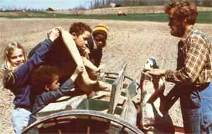

Tom and Anne Made Breznau reap a double reward from their "sideline" home business:
A few years ago, my husband Tom and I left the rat race of urban Detroit to start an organic farmstead... situated a full 180 miles west of that Michigan metropolis. We constructed a new barn, replenished the soil with green-and animal-manure, started raising both livestock and produce (our cash crops include beef cattle, sheep, pigs, hay, grapes, strawberries, asparagus, and a few "ordinary" vegetables)... and in general tried to live in harmony with the land around us.
Tom was proud of our hard-working outdoor ways, but he wasn't content with 'em... because he kept thinking back to the children he'd been teaching in Detroit. And the more he thought about those young folk-about the television they watched, the processed food they ate, and the noisy violence of the world they lived in-the more he wanted to share our new rural life with some school-age urban children.
Well, Tom Breznau finally decided that he just wasn't willing to "bury his head in organic garden soil", so he went into Detroit and approached the staff of Taproot (a private, inner-city elementary school) with a proposition: Would they be willing to help support a farm camp... as part of the school's ongoing curriculum?
The educators were enthusiastic (to say the least), and-before long-a deal was struck and the Taproot Farm Camp was formed. Tom and I began that first year of TFC with three five-day programs... but those sessions were such rousing successes that we had to expand the program. We now run seven week-long camps every year: three in the fall, one in the winter, and three in the spring.
A typical week at Taproot Farm Camp starts around lunchtime on Monday... when a "chauffeuring" parent, one teacher-who'll stay through the week-and a dozen children complete their drive out from the big city. After everyone enjoys a hearty and healthful repast (one seven-year-old described the camp diet as "whole wheat everything"), Tom takes the youngsters out for a hayride and a tour of the farm.
Next comes sign-up time. My husband and I both believe in hard work and firm limits... set within an atmosphere of love and fun. So we expect the young campers to help with the chores of an ongoing farm operation, but we also provide a lot of supportive understanding for tots with anxious feelings, as well as plenty of recreation time for all the youngsters. The children get their first taste of the work side of farm life when they're faced with the "opening day" sign-up sheet... each child is expected to help cook, clean up, and do morning and evening chores.
A generous play period comes next... followed by a brief "help out" project and then supper. Afterward, everyone plays outdoor games and enjoys a story hour around an evening bonfire. At bedtime, Tom and I visit the children in their tents... and are careful to give each individual enough attention to help relieve nighttime worries and any pangs of homesickness. (Tom likes to ask each child if he or she wants "a kiss, a hug, or a slug".)
The rest of the week-like that first day-combines play and work sessions. Children "learn by doing" as they help plant... harvest... feed... milk... herd sheep... haul hay (four youngsters to a bale)... tramp through cornfields to gather the ears the combine missed... and even stomp grapes-with their bare (and washed!) feet-to make fresh juice! Our planned play activities often incorporate educational experiences, too. For example, we may organize a big treasure hunt and have the young folk search for "the place where corn is stored for winter" or "the homestead horse's house".
Finally, at noon on Friday, a school parent arrives to help take the campers back home, and the children say goodbye to their favorite animals and to us. The farewells at these partings are often quite sad.
The economic "facts of life" at the farm camp are these: Tom (who is titled "a part-time schoolteacher") receives a salary of $200 per session (or $1,400 per annum) from Taproot. Each parent also contributes $15 expense money per child, which -at 12 children a session and 7 sessions yearly-adds up to an additional $1,260. Thus we're able to bring in an extra $2,660 a year by raising "organic children"!
Of course, that figure doesn't cover the expense side of the farm camp's story. We have to spend an extra $40 per camp week at the local market on nuts, cheeses, and other store-bought groceries. And, of course, even the youngsters' food that we do grow ourselves is the result of our labor, resources, and start-up money.
Tom and I have other camp costs as well. We have to put extra cash into building upkeep to make up for the wear and tear caused by a dozen pint-sized guests. (Naturally, the school's insurance policy would cover any serious damage to our property or injury to a child.) I should admit, too, that we sometimes let our concern for the quality of our campers' farm experiences override dollars-and- cents practicality by-for instance-keeping a species of barn critter that isn't carrying its financial weight... but is adored by the youngsters.
Still-even after trying to take into account all of our intangible "liabilities", as well as the extra "asset" of having some useful farmhands around-we figure that the cash rewards of our enterprise are more than adequate for us.
Of course, there's far more to Taproot Farm Camp than some extra income for the Breznaus. The school's urban teachers find that the sessions provide an excellent basis for math, reading, and writing instruction (the children will often correspond with us all year to ask about such things as how their favorite farm animal is doing). The youngsters also get an opportunity to experience an organic diet, a more natural environment, and other facets of an "alternative" lifestyle.
At the same time, Tom and I reap the satisfaction that comes from helping young people grow in knowledge and gain a vision of a healthy, wholesome world. Plus-as a special bonus-the close family feeling we all share during camp sessions warms and enlivens our out-of-the-way rural home.
As Jeannine, one of our nine-year-old letter scribers, once wrote, "I'm glad Tom got this farm with all neat ideas and I'm glad he lets kids from Taproot come. I like it a lot, I do."
Both Tom and I can only respond to that remark with, "We like it a lot, too, Jeannine... we do, too."
|
 PHOTO SUPPLIED BY THE AUTHORS |
|
|